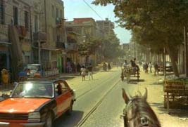

|
友人とタクシーに乗ってアレキサンドリアの駅に出かけた。バスは乗らないようにと先人からの有りがたいご忠告
に従いタクシーにしたのである。この有りがたいご忠告は２４章「エジプトにはバス停がない」に記してある。キャ
ンプ従業員にアラビア語で我々のキャンプ（宿舎）の住所を書いて貰って置いた。万が一迷子や、帰れなくなった場
合は、このメモを頼りに帰るつもりである。
さて、タクシーに乗るにはどうするのか全く分からない。とりあえずアレキサンドリア方面に向かって歩き始めた。
車が通ると何人かが手を挙げて「マハッタ、マハッタ」と言っている。車は止まり人が乗って走り去る。
車には既に何人か乗っている、乗り合いタクシーの様である。タクシーと言っても様々な大きさの車である。
セダン、ワゴン、ワンボックスカーとあり、どれも何人かが乗っておりそれに次々と乗る。
真似をすることにし、近くの人が止めたタクシーに乗る。運転手は日本人と分かって前に乗せてくれた。我々は行き
着くところまで乗ってみようと決めていた。さて値段はいくらなのか分からない。降りる人の額を目を凝らして見るが
分からない。分からない理由は、支払う人は乗客の誰かに手渡しで黙って運転手に払う、手渡しの時はみんなお金を手
のひらで完全に握りしめて見えなくしている。運転手も握りしめて受け取ったら額を確認せずふた付きの箱に入れた瞬
間ふたをしてしまう。
そうこうしていたら、全員降りてしまった。動く様子がない。運転手にフィニッシュ？と聞いたらヤー・フィニッシ
ュと言われた。さて値段は？聞いたら二人で１ポンドと言ったと思う。我々には細かいお金を持っていなかったが値切
ろうと私が思ったときに友人が５ポンド札を出してしまった。その瞬間、運転手は鷲つかみにし箱に入れてしまった。
その技は速かった、目にも留まらぬものがあった。抗議しようにもこちらはアラビア語はしゃべれないし英語もまだし
ゃべれなかった。うかつに箱を開けて奪回したら、今度はこちらが強盗に見られそうである。諦めて降りることにした。
ブラブラしていたら、御者に声を掛けられて馬車に乗らないかと誘われた。乗るつもりは全くなかったが盛んに進め
てくる。その気になってきた。さて値段交渉が始まる。最初２０ポンドと言ってきた。タクシーの事もあり腹がたって
いたので、タクシーでアガミ（我々の居住区）からここまで２０ピアストルだった。１ポンドにしろと要求する。正し
い値段は分からなかったが適当にごまかしたつもりである。嘘がばれたらばれたで構わないと思っていた。御者は半日
案内するのだから２０ポンドと一向に譲らないい。そこで私は同じ事を言って食い下がる。御者は、「馬の世話は大変
であるし食べ物を与え無ければならないから高くなると」言い返す。こちらも負けじと、「タクシーも食べ物を与えな
ければならないし高いガソリンを使っているのに値段は遙かに安い。馬はただの草だからお金はかからない。だから安
くしろ。」これをお互い繰り返す、最後に御者は半値１０ポンドにしてきた、そして１日案内すると切り出した。半値
にしたら十分と先人に聞いていたので、我々は交渉成立し乗ることになった。御者は非常に機嫌良く我々がもう良いと
いうまで案内してくれた。当時の１０ポンドは彼らの生活費半月分はあったのである。日本円に換算すると当時２０００
円であった。

馬車から町の写真を撮ろうとすると制止されてしまった、周りから抗議が出るから駄目であるというのである。その内
ここなら撮影してもいいと言われて撮ったのがこの１枚である。制止された理由は町が汚いからであった。
後で分かったタクシーの値段であるが、一人２５ピアストルで十分で、二人で５０ピアストル。１ポンドの半分であることが分かった。
|